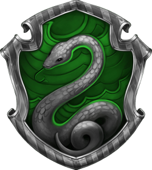

그리핀도르
위치: 그리핀도르 탑 7층, 뚱보 여인의 초상화가 지키고 있다.
암호: 정기적으로 바뀌는 암호를 말해야만 안으로 들어간다.
특징: 여학생 기숙사 계단에는 남학생들의 접근을 막는 마법이 걸려 있다.

슬리데린
위치: 검은 호수 밑의 지하감옥
암호: 촉촉한 돌벽 앞에서 암호를 외친다(암호는 2주 간격으로 바뀌며 게시판을 통해 알려짐).
특징: 가끔 창문에 대왕오징어나 다른 흥미로운 생물체가 나타나고 밤에는 잔잔한 파도소리가 들린다.

래번클로
위치: 래번클로 탑의 빽빽한 나선형 계단을 올라가면 나온다.
암호: 청동 독수리상이 내는 논리적인 수수께끼를 푼다(충분한 지적능력만 갖췄다면 누구든 기숙사에 침입이 가능).
특징: 독수리상의 문제를 맞히지 못해 들어가지 못한 학생 여러 명이 입구 앞에서 머리를 맞대고 고민하는 광경이 벌여진다.

후플푸프
위치: 부엌 근처 오른쪽 복도의 구석진 곳에 커다란 통이 쌓인 공간
암호: 밑에서 두 번째 통과 두 번째 줄의 가운데 통에 '헬가 후플푸프' 리듬에 맞춰 두드리면 입구가 열린다.
특징: 유일하게 침입자를 내쫓는 장치가 설치되어 있다.